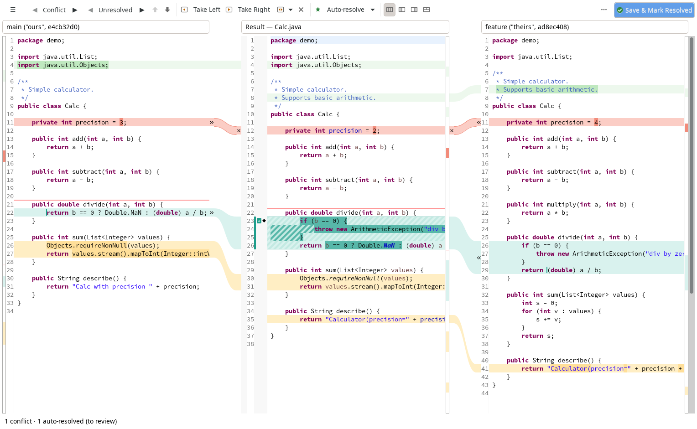
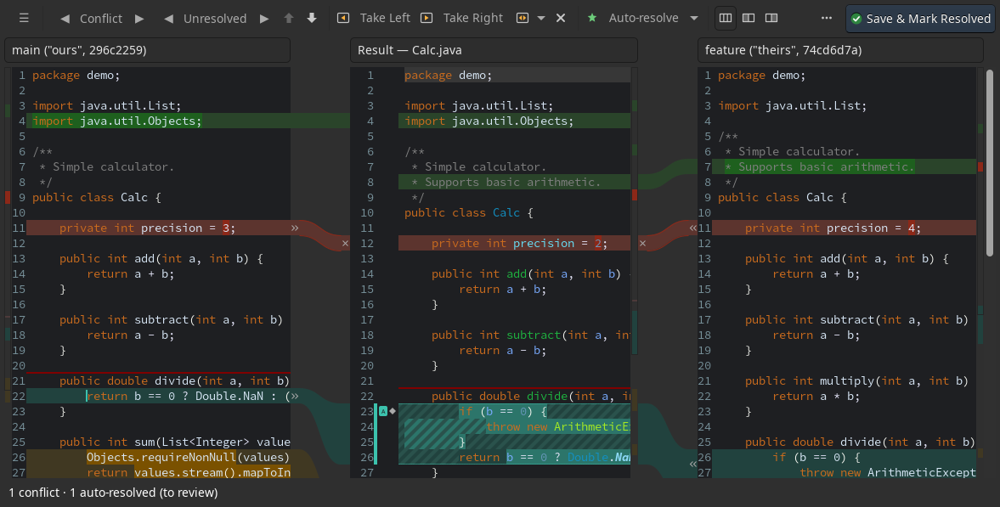
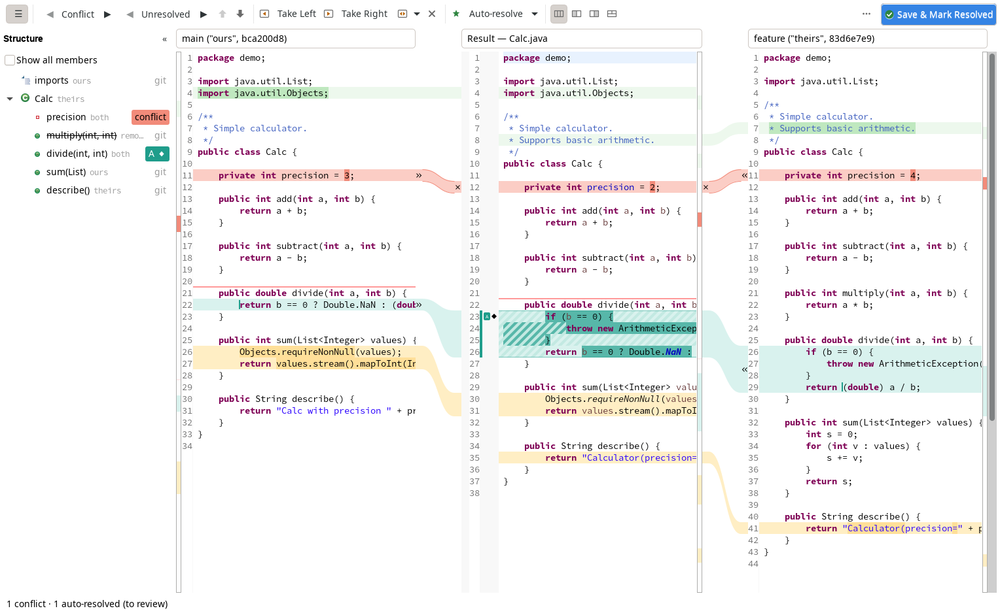

Resolve git conflicts in Eclipse, three panes at a time
AfterGit is a three-pane merge resolver for the Eclipse IDE that plugs into EGit. A double-click on a conflicting file in Git Staging opens ours, the result and theirs side by side, resolves what can be resolved safely on its own, and leaves every automatic decision visible until you review it.

Features
-
Three panes with connectors
Ours | Result | Theirs (or Left + Result, Result + Right, Result Below), full-line change colours with the changed words in a stronger shade, an overview stripe and one shared scroll bar. » / « take a side, × ignores; Take Both, Revert Block and undo/redo that includes block states.
-
Auto-resolution you can review
Non-conflicting changes, word-level merges and an optional greedy pass run when a file opens. Auto-resolved blocks are teal with an “A” and stay hatched until you mark them reviewed; Revert and Re-run take them back.
-
Structure-aware resolvers
Java imports and class members,
.propertiesfiles per key,MANIFEST.MFper header and clause, and an optional “Newer version wins” for build descriptors such aspom.xml. Other plug-ins can add resolvers through an extension point. -
Java support
With JDT the result is a real Java editor with live errors, quick fix and content assist. Imports are fixed after a take, and an auto-resolved block that adds a compile error gets a red frame.
-
Resolve All Simple Conflicts
For files, folders, projects or a whole repository, in the background, with a summary, “Stage Resolved Files” and “Undo Resolve All”.
-
Every kind of conflict
Text conflicts in the resolver; binary and modify/delete conflicts with Keep Ours, Keep Theirs or Delete File. Saving with open conflicts writes markers in the repository’s
merge.conflictStyle. -
Structure compare
A Structure column (and the Outline view) lists the members ours or theirs changed, who changed them and the state of their blocks, for Java,
.propertiesandMANIFEST.MF. -
Other languages
With tm4e and lsp4e: TextMate syntax colours in all three panes and the errors of the file’s language server (Wild Web Developer, LemMinX and others) in the result.
-
Fits into EGit
Optionally the Merge Tool of Git Staging, “Resolve in AfterGit…” in the explorers and the Team menu, Save & Mark Resolved (save,
git add, close) and markers on files that still need attention. -
Preferences and themes
Workspace and project settings (shareable through
.settings), colour schemes for light and dark themes including a colour-blind safe and a high-contrast one, and key bindings for every command. -
Optional AI, off by default
Resolve with AI asks a language model (the Anthropic Messages API or an OpenAI-compatible server such as OpenAI, Ollama or LM Studio) to resolve a conflict. AI agents (MCP) runs a local Model Context Protocol server for agents you run yourself. Nothing is sent until you allow it, and every answer is a proposal you review.
Screenshots


Requirements
- Eclipse IDE 2026-03 (4.39) or later.
- Java 21 or later to run Eclipse.
- EGit and JGit 7.6 or later (part of the Eclipse IDE packages).
- Optional: the Java development tools (JDT) for the Java support.
- Optional: TextMate support (tm4e 0.17.2 or later) and the Language Server Protocol client (lsp4e 0.19.8 or later) for other languages.
- Tested on Linux (GTK). The bundles are plain Java and SWT, but Windows and macOS are not tested yet.
Early release. 0.0.1 is used on real merges but is young: review the result before you commit. Known limitations are listed in the changelog; please report problems in the issue tracker.